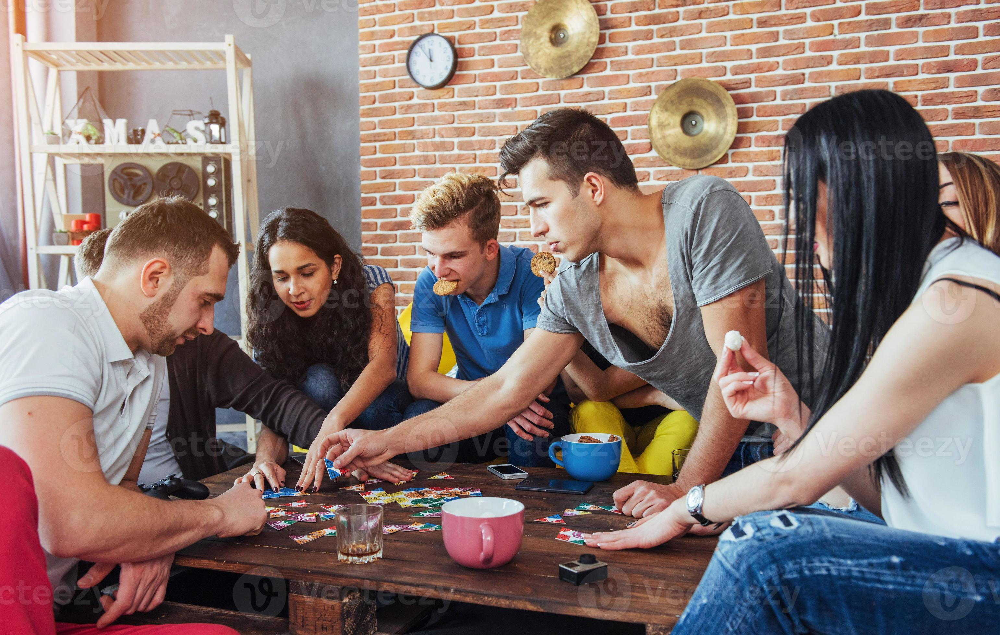

Leer un libro
Una buena historia es la mejor forma de desconectarse. Leer estimula la mente y te aleja del celular por un rato.

Hacer ejercicio
Moverte te ayuda a liberar estrés y sentirte mejor. Además, no necesitas el celular para disfrutarlo.

Cocinar
Cocinar es creativo y relajante. Te enfoca en el momento y deja poco espacio para mirar el teléfono.

Juntarse con amigos
Compartir con amigos en persona es más divertido que por chat. ¡Dejá el celular y disfrutá el momento!

Pescar
La pesca es calma, naturaleza y desconexión. Ideal para estar presente y lejos de la pantalla.